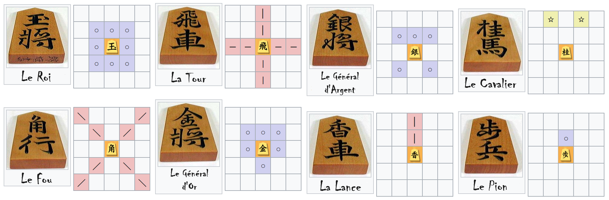
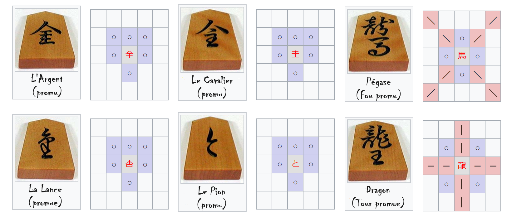

Shôgi - Initiation aux échecs japonais
Jocelyn Béziau
06 décembre 2023
Les échecs japonais
Différences avec les échecs
Toutes les pièces peuvent se promouvoir !
Une pièce capturée peut être réutilisée
Déplacements

Promotion (1/3)

Promotion (2/3)
Promotion (3/3)
Parachutage
Fin de partie
Démonstration - Défense et contre-attaque
Démonstration - Échange de fous
À vous de jouer !
Pour aller plus loin
Accéder au site de la Fédération Française de Shôgi
Jouer en ligne
Analyser des parties officielles
Approfondir l’histoire et les règles du jeu